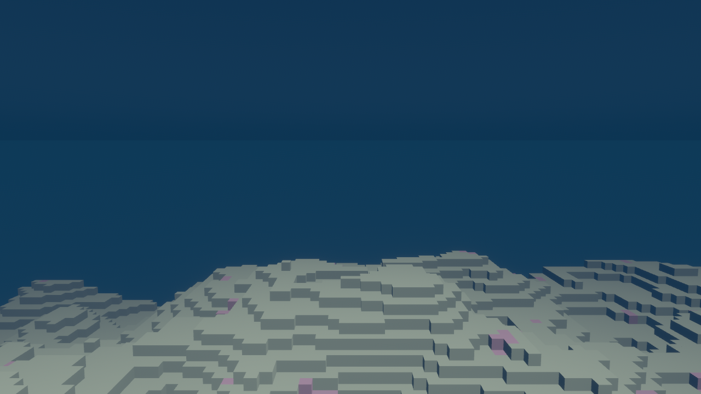
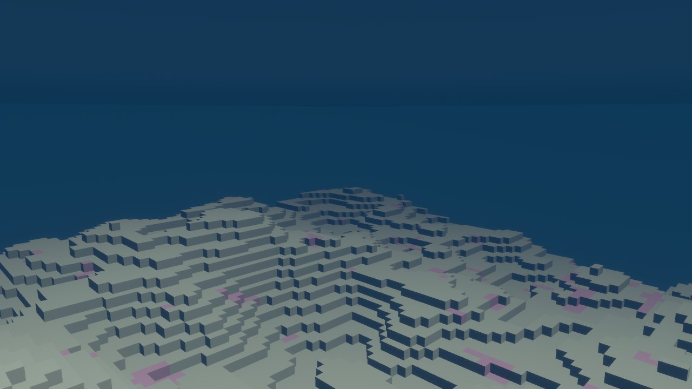

AquaForge
An underwater voxel sandbox in Rust + Bevy 0.18 — “Minecraft, but the whole world is a seafloor.” This page captures what's currently running, shows the seabed as it renders today, and keeps a prioritized list of features to build next.
Screenshots

DistanceFog
tinted deep-blue fades the horizon, and the flat line across the
middle is the translucent sea-surface plane above the player.

Coral — one of six BlockTypes
(Air, Stone, Sand, Dirt, Coral, Kelp).
Rendered with Bevy 0.18 PBR materials, cascaded shadows, HDR +
natural Bloom, exponential distance fog, a sinusoidal
vertex-displaced water surface, per-vertex ambient occlusion, and
a greedy coplanar-face mesher. Screenshots were captured on
LLVMpipe (software Vulkan) so colours are real but the framerate
very much is not.
Timeline
- PR #3 Underwater voxel scaffold on Bevy 0.18 — chunked 16³ world, face-culling mesher, fly-cam, blue fog, translucent sea-surface plane.
- PR #4
This progress page (
docs/index.html) with screenshots and a prioritised backlog. - PR #6 Voxel DDA raycast, yellow wireframe target highlight, left-click to break, right-click to place, 1..5 to cycle block type.
- PR #8
PBR lighting rig: cascaded shadows, tonemapping, tuned sun/ambient
brightness. Dropped the duplicate plugin + set
Msaa::Offto fix a runtime panic. - PR #9 Per-vertex ambient occlusion baked into the chunk mesher — darkens concave voxel corners with zero GPU cost.
- PR #10 Greedy AO-aware mesher. Replaces the per-face sweep with merged coplanar same-type quads, cutting triangle counts dramatically on flat terrain.
- PR #11
Animated water surface via an
ExtendedMaterial-wrappedStandardMaterialwith a custom vertex shader (assets/shaders/water.wgsl). - PR #7
Inventory-backed hotbar HUD — 5 slots at bottom centre with
per-slot icons, counts, and yellow-bordered selection. Break deposits
into the matching slot; place consumes one unit only after a confirmed
set_block. Open, awaiting merge.
What's there today
Chunked voxel world
The world is a fixed 6×2×6 grid of 16³ chunks
(72 chunks, ~295k potential blocks). Each chunk is procedurally
filled from a 2D seabed height (value-noise + fBm, 4 octaves)
plus depth-based rules: stone deep down, a dirt layer, sand on
top, and sparse coral outcrops along the crest. Generation is
fully deterministic — the seed lives in WORLD_SEED.
Face-culling mesher
Each chunk emits a single Mesh with one quad per
block face that touches air (or kelp). Normals, per-block vertex
colours, UVs, and indices are all computed per chunk in
Chunk::build_mesh. No external voxel crate.
Underwater atmosphere
AtmospherePlugin sets a deep-blue
ClearColor, a cyan GlobalAmbientLight,
a directional sun (shadows off to stay cheap on low-end GPUs),
exponential DistanceFog, HDR + natural
Bloom, and a translucent sea-surface
Plane3d hovering at WATER_LEVEL.
Fly-cam controls
ControlsPlugin attaches a FlyCam to
any Camera3d: WASD moves rotation-relative,
Space/LShift go up/down,
LCtrl is a 3× sprint, mouse controls yaw/pitch
while the cursor is locked, left-click grabs the cursor, and
Esc releases it.
Module layout (17 files, ~1.7k LOC)
- Working
main.rs—Appbootstrap, window config, plugin wiring (AtmospherePlugin,GamePlugin,ControlsPlugin) - Working
game/blocks.rs—BlockTypeenum, opacity + per-type vertex colour - Working
game/chunk.rs— 16³ chunk, seabed generator, greedy AO-aware mesher - Working
game/chunk_map.rs—HashMap<IVec3, Entity>of loaded chunks, helpers for world-to-chunk coordinate conversion - Working
game/edit.rs— voxel DDA raycast, wireframe target highlight, left/right-click break & place, 1..5 to cycle held block - Working
game/world.rs— 6×2×6 chunk grid spawn, sharedStandardMaterial, water-level constant - Working
rendering/mod.rs— ambient + sun, fog, HDR + Bloom, sea-surface plane - Working
rendering/lighting.rs— PBR rig with cascaded shadows and tonemapping - Working
rendering/water.rs+assets/shaders/water.wgsl— animated water viaExtendedMaterialvertex displacement - Working
systems/input.rs— fly-cam state, WASD, mouse-look, cursor grab/release - Working
utils/math.rs+utils/noise.rs— smoothstep / bilerp helpers and a dependency-free value-noise + fBm - Stub
rendering/{ui, shaders}.rs— single doc comment each, reserved for HUD widgets and future custom materials
How to run it
Controls
| Input | Action |
|---|---|
| W A S D | Move forward / left / back / right |
| Space / LShift | Move up / down |
| LCtrl | Hold for 3× sprint |
| Mouse | Look around (after clicking the window) |
| Left click | Grab cursor · after grab, break the highlighted block |
| Right click | Place the held block on the highlighted face |
| 1–5 | Cycle held block (Stone / Sand / Dirt / Coral / Kelp) |
| Esc | Release the cursor |
Build
Rust 1.89 is pinned via rust-toolchain.toml, so
rustup will fetch it automatically on first build.
On Linux Bevy also needs a handful of system libraries.
# one-time: Bevy system deps on Ubuntu/Debian
sudo apt install pkg-config libwayland-dev libxkbcommon-dev \
libasound2-dev libudev-dev libx11-dev libxcursor-dev \
libxi-dev libxrandr-dev libxinerama-dev libgl1-mesa-dev
# build & run
cargo run --releaseRecommended next features
Grouped by area and tagged roughly by priority. P1 moves the project from “pretty scaffold” to “playable game”, P2 adds depth and polish, and P3 are longer-term stretch goals.
World & generation
Streaming chunk loader around the player
Today's world is a hard-coded 6×2×6 grid spawned at
startup. Move that into a HashMap<IVec3, Chunk>,
load/unload chunks within a radius of the camera, and remesh
dirty chunks lazily. Needed before the world can feel
“large”.
Greedy meshing Shipped in #10
Chunk::build_mesh now runs a greedy sweep that
merges coplanar same-type faces into rectangles, cutting
triangle counts by ~5–10× on flat terrain. The
mesher also preserves per-vertex AO when merging, so the
savings don't cost visual quality.
Biomes & feature placement
Layer a second noise channel for “biome” and pick
block palettes from it: kelp forests (tall
BlockType::Kelp columns), reef flats (dense
coral), sandy plains, rocky shelves. Scatter shipwrecks and
thermal vents as structure templates.
Rendering & atmosphere
Textured block atlas
Replace flat per-block vertex colours with a single texture atlas (one image, UV offsets per face). Opens the door to animated water, wavy kelp, varied stone, and actual normals.
PBR lighting rig Shipped in #8
Cascaded shadows, tuned sun + ambient brightness, and
tonemapping are now live in
rendering/lighting.rs. Caustics + volumetric
god-rays remain the next logical step.
Animated water surface Shipped in #11
The sea surface now uses an ExtendedMaterial
wrapper over StandardMaterial with a custom WGSL
vertex shader that sums a few sinusoids and emits an
analytically-derived normal, so PBR specular picks up live
highlights as the waves roll.
Per-voxel AO + smooth normals Shipped in #9
A lookup-based ambient-occlusion term is now baked into vertex colours during meshing, darkening concave voxel corners at zero GPU cost. Next step is smooth normals on the merged greedy quads.
Caustics & god-rays
The next underwater-atmosphere feature: caustics projected on the seabed plus volumetric light shafts descending from the sun. Start with a screen-space post-process and an animated projector texture; graduate to real volumetric lighting later.
Gameplay
Swimmer player with swept-AABB collision
Replace the fly-cam with a capsule “diver”: mild gravity when out of water, buoyancy + drag underwater, swept AABB-vs-voxel collision against the chunk grid, and an air / oxygen budget that ticks down and forces you to surface. First real step toward a game loop.
Raycast break / place Shipped in #6
A voxel DDA raycast runs from the camera each frame. The hit
block gets a yellow wireframe outline; left-click breaks the
block (setting it to Air) and right-click places
a new block against the hit face. Only the chunks actually
touched by the edit are remeshed.
Inventory & hotbar HUD In flight, PR #7
A bevy_ui hotbar at the bottom centre with per-slot
block icon + count and a yellow-bordered selection. Breaks
deposit into the matching slot; placement consumes one unit
only after a confirmed set_block, so edge-of-world
failures never silently drain stock.
The “Forge” centrepiece
Lean into the project name: a placeable Forge
block that opens a crafting UI, consumes raw seafloor
resources (coral, stone, kelp fibre), and produces tools /
light sources / building parts. Recipes loadable from RON.
Creatures & simple AI
Start with passive fish schools that wander through open water using a small steering / flocking system, then add a hostile critter with line-of-sight and a lunge attack. Good feel-per-line-of-code ratio.
Systems & infrastructure
Save / load
Persist only non-default (edited) blocks per chunk and
regenerate the rest from the seed. Serialize with
bincode + zstd for cheap, tiny save
files. Autosave on world unload.
Underwater audio pass
Low-pass filtered ambient loop, muffled block-place / break SFX, and bubble sounds when the player swims. Bevy's built-in audio is plenty to start, and the current CI runs under ALSA so there's no new system dep.
Multiplayer scaffolding
An authoritative server with bevy_renet or
lightyear. Replicate player position and block
edits first; terrain stays client-side but deterministic from
the shared seed.
CI: clippy + fmt gates
The current workflow runs cargo check,
build, and test. Add
cargo fmt --check and
cargo clippy --all-targets -- -D warnings so the
repo stays lint-clean as the scaffold fills in.